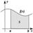

Divulgación
 El dinero no fomenta la creatividad: Daniel Pink en TEDGlobal 2009
El dinero no fomenta la creatividad: Daniel Pink en TEDGlobal 2009
Dar recompensas, castigar, ¿es esa la mejor forma de obtener lo mejor de las personas? Daniel H. Pink muestra en una convincente charla en TEDGlobal 2009 que no es así.
Un derrame de iluminación: Jill Bolte en TED 2008
En una fascinante y espectacular conferencia, la Dra. Jill Bolte Taylor explica las diferencias entre los hemisferios del cerebro humano y nos invita a percibir el mundo de una manera diferente.
Patrones, mitos y creer cosas extrañas: Michael Shermer en TED 2006
Existe una gran tendencia en los seres humanos a aceptar cosas ilógicas, absurdas e imposibles, y Michael Shermer ilustra este fenómeno con algunos amenos ejemplos en una charla de TED 2006.
 La enseñanza en matemáticas debe cambiar: Arthur Benjamin en TED 2009
Arthur Benjamin sugiere en TED 2009 que todo el enfoque al enseñar matemáticas está equivocado y propone una alternativa para solucionarlo.
 Cirugía robótica: Catherine Mohr en TED 2009
Cirugía robótica: Catherine Mohr en TED 2009
Los robots aparecen en la medicina quirúrgica volviendo más seguras y sencillas las operaciones. Impresionante despliegue tecnológico mostrado por Catherine Mohr en TED 2009.
El futuro de la Web (II): Twitter en TED 2009
Evan Williams describe el surgimiento y funcionamiento de una de las redes sociales que, a pesar de su aparente simplicidad, está cambiando cómo vemos a la Web: Twitter.
 El éxito y los malvaviscos en TED 2009
El éxito y los malvaviscos en TED 2009
En la década de 1970, el doctor Walter Mischel publicó un estudio sobre niños y malvaviscos; en una breve charla en TED U 2009, Joachim de Posada narra la relación de tal experimento con el éxito.
El futuro de la Web (I): Tim Berners-Lee en TED 2009
¿A dónde se dirige la Web? 20 años después de haber inventado la WWW, durante TED 2009, Tim Berners-Lee hace una invitación abierta para abordar la siguiente fase en la evolución de la red: Datos vinculados.
El programa que cambia genes: El cardiólogo Dean Ornish
El cardiólogo Dean Ornish nos dice en una conferencia de TED 2008 que al cambiar nuestro estilo de vida podemos mejorar nuestra vida y nuestra salud.
Salvando bosques tropicales, el corazón de la tierra y lluvia por bacterias
Los bosques transportando agua tierra adentro, bacterias que hacen llover, y Willie Smits en TED 2009 describe como restauró un bosque tropical y creó una comunidad para salvar a los orangutanes.
Categorías
Archivo
Últimas anotaciones en cada categoría

Inspiración
Los 30 no son los nuevos 20

Noticias
Ver tu mente en tiempo real: Christopher deCharms en TED 2008
![Música en la era digital [Animación]](../../wp-content/themes/tma/images/featured/animation_04_2009_featured.jpg)
Ocio
Música en la era digital [Animación]